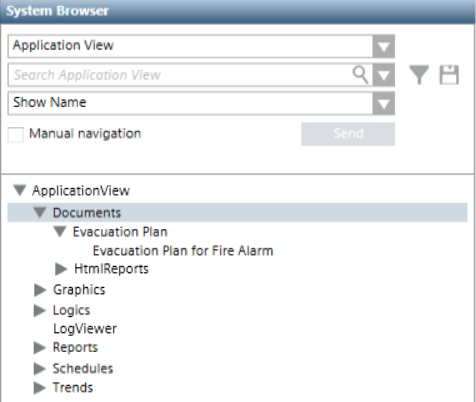
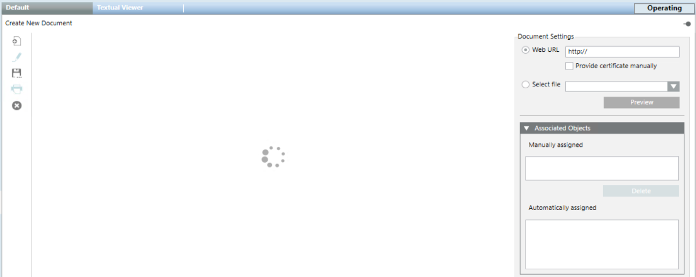
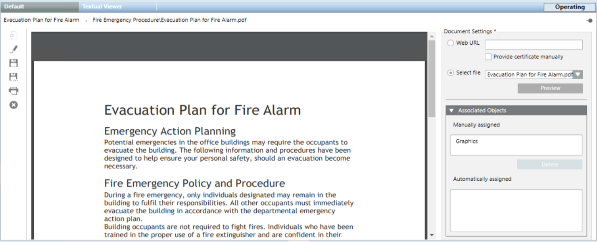

Documents Workspace
Document objects are located under Applications > Documents in Application View of System Browser, and organized into subfolders.

A folder is always available and contains a set of reports in HTML format for specific use. For more details, see HTML Reports.
When you select a documents folder, you can create/delete folders, or create new document objects.

When you select a document object and set it to edit mode  , you can modify, save, duplicate, print, or delete that document object.
, you can modify, save, duplicate, print, or delete that document object.

Document Settings | |||
Setting | Description | ||
Web URL | This option sets a web link as the content of the document. | ||
Provide certificate manually | This check box must be selected if a web link is set as content of the document and a connection is to be established with a website that requires a certificate. | ||
Select file | This option sets a file as the content of the document. The drop-down list lets you choose from the files previously stored on the Desigo CC server station, in one of the project documents folders. | ||
Associated Objects | |||
Setting | Description | ||
Manually assigned | The current document will appear as a related item of all the objects listed in this field. You can drag objects here from System Browser. | ||
Automatically assigned | The current document will also appear as a related item of all the objects listed in this field. These links are created by the coverage area feature of Graphics Editor and you cannot remove them. | ||
Documents Toolbar Controls | |||
| Selection in System Browser | ||
Documents Folder | Document Object | ||
New | Create a new subfolder under the currently selected one. | n.a. | |
Operate Mode | n.a. | Set the edit mode | |
Save | n.a. | Save the changes made to the current document object. | |
Save As | Create a new empty document object from scratch. | Save the currently selected document with a different name. You can use this to create a new document object from an existing one. | |
Delete | Delete the currently selected documents folder, and any document objects contained inside it. (You cannot delete the main Documents folder.) | Delete the currently selected document object. | |
Print | n.a. | Print the current document using one of the available printers (RTF documents are sent to the Windows default printer). | |